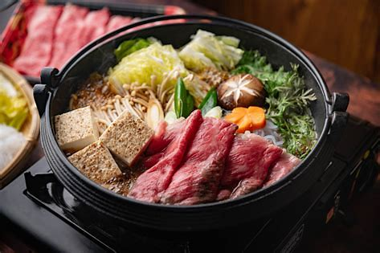

Sukiyaki recipes

Serve this simple Japanese beef sukiyaki stir-fry recipe over thin Japanese noodles or rice, if desired.
Ingredients
- 1 tablespoon vegetable oil
- 1 ½ pounds beef sirloin strips
- ⅔ cup soy sauce
- 2 teaspoons monosodium glutamate (MSG)
- ⅓ cup chicken broth
- ⅓ cup white sugar
- 3 small onions, sliced
- 2 cups chopped celery
- 1 (14 ounce) can bamboo shoots, drained and chopped
- 4 green onions, sliced
- 1 (4.5 ounce) can mushrooms, drained
- 1 (8 ounce) can water chestnuts, drained
- 1 teaspoon cornstarch
Steps
- Heat oil in a large skillet or wok over medium-high heat.
- Brown beef in hot oil, then stir in soy sauce, MSG, broth, and sugar.
- Mix in onion and celery, and cook until tender.
- Stir in bamboo shoots, green onions, mushrooms, and water chestnuts.
- Reduce heat to medium, stir in cornstarch, and simmer until sauce is thickened.
Home